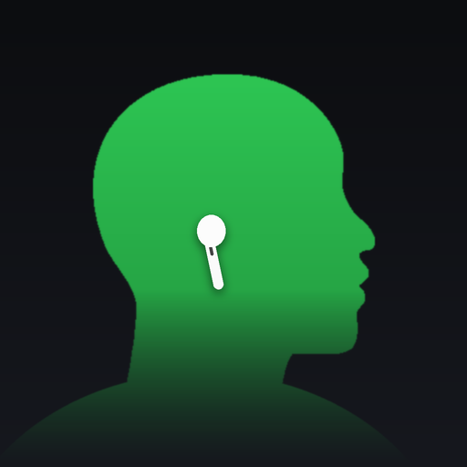
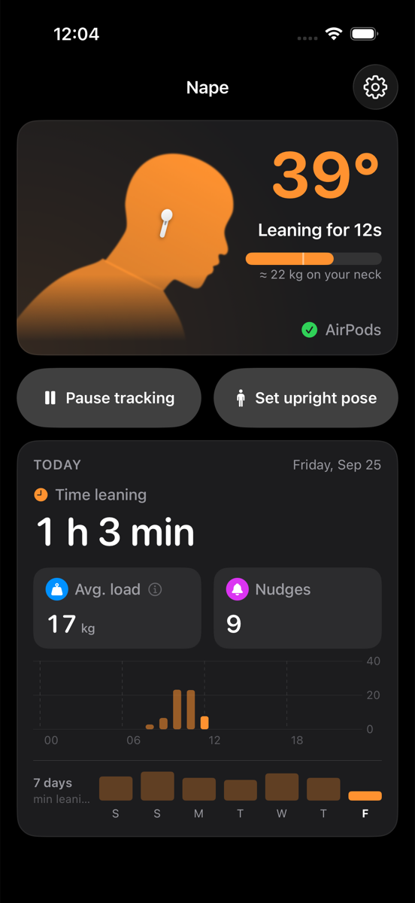
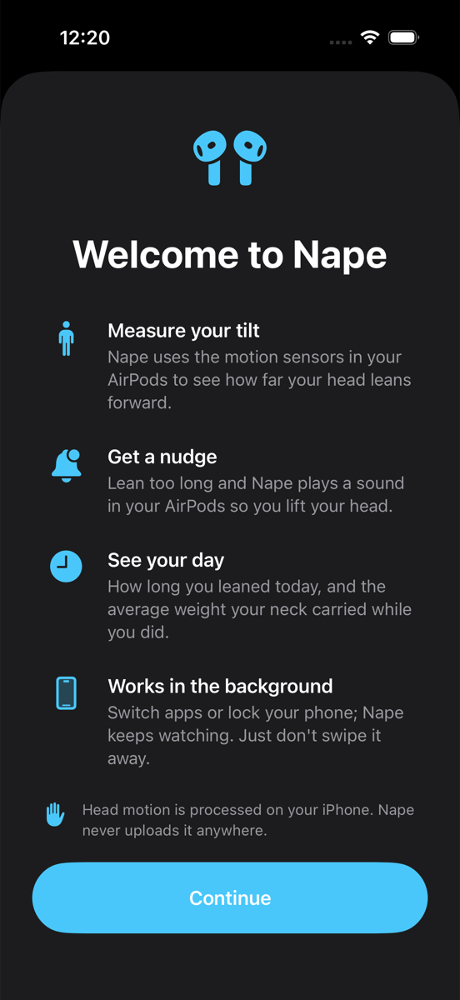
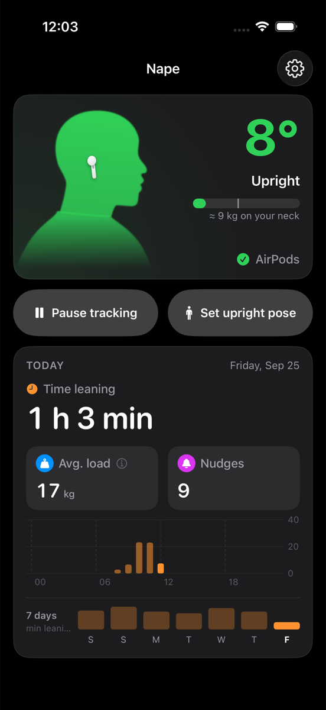
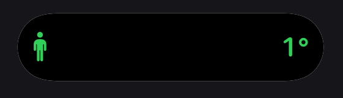
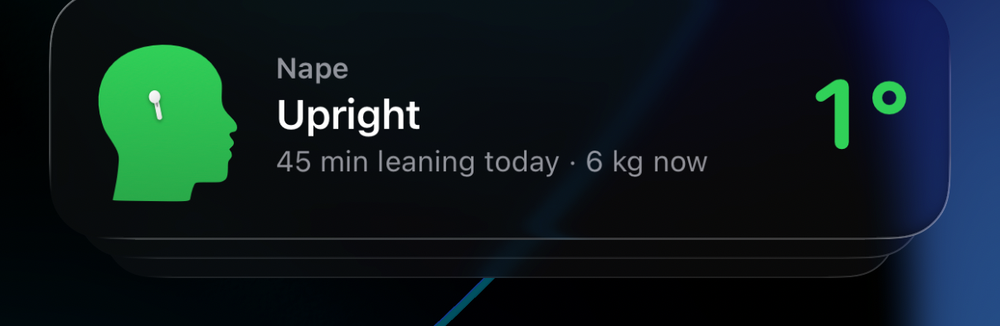
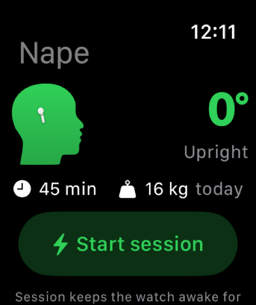

NapeNape reads head motion from your AirPods, measures how far you lean forward, and nudges you before your neck pays for it. Everything stays on your iPhone.
View on GitHub How it worksiOS 17+ · AirPods Pro, 3, 4, Max or Beats Fit Pro · Coming to the App Store

No account, no server, no dashboard. A figure, a number, and a nudge when you need one.
A side-profile figure leans as your head does. Green when upright, orange once you cross your threshold.
Lean too long and Nape plays a sound in your AirPods and taps your phone. Five sounds, three intensities, and it gets firmer if you ignore it.
Minutes past your threshold today, and the average weight your neck carried meanwhile, in kilograms. Labelled as an estimate, with the math one tap away.
Your current angle lives at the top of the screen and on the Lock Screen while tracking.
Nudges reach your wrist: mirrored when the iPhone is locked, instant through the watch app's session. A complication shows tilt and today's leaning time.
Switch apps or lock your phone. Tracking continues through a silent audio session; just don't swipe Nape away.
Head motion is processed on device and never uploaded. No analytics, no network calls, open source.
Welcome, tracking, and what happened today.


The Dynamic Island shows the figure and your angle in compact form. On the Lock Screen you get the full card with today's leaning time.


The watch app mirrors your tilt and today's numbers, taps your wrist on every nudge, and adds a complication to the watch face.

Nape estimates the compressive load at the base of the neck with a static lever model.
m is head-and-neck mass (5.4 kg by default, or 8.1 % of your body weight after Dempster 1955), θ the forward tilt. cos θ is the share of the head's weight pressing straight down the spine; 4.9 × sin θ is the pull of the extensor muscles holding the head up, whose leverage is about five times shorter than the head's. The ratio is tuned so the model matches Hansraj (2014) within 1.5 kg.
| Tilt | Model | Hansraj 2014 |
|---|---|---|
| 15° | 12 kg | 12 kg |
| 30° | 18 kg | 18 kg |
| 45° | 22 kg | 22 kg |
| 60° | 26 kg | 27 kg |
Average load is that figure averaged over the minutes you spent past your threshold. It is an estimate from a static model, not a clinical measure. Treat both numbers as trends to lower.
Nape, AirPods'unuzun hareket sensöründen başınızın açısını okur, öne eğimi ölçer ve uzun süre eğik kaldığınızda uyarır. Hiçbir veri iPhone'unuzdan çıkmaz.
Yandan bir profil figürü başınızla birlikte eğilir. Dikken yeşil, eşiği geçince turuncu.
AirPods'ta ses, telefonda titreşim. Beş ses, üç şiddet (Nazik, Sert, Acımasız); görmezden gelirseniz sertleşir.
Bugün eşiği aşarak geçirdiğiniz dakikalar ve o sırada boynunuza binen ortalama ağırlık (kg). Tahmin olarak etiketlenir, hesap tek dokunuşla görülür.
Takip sürerken anlık açı ekranın üstünde ve Kilit Ekranı'nda durur.
Uyarılar bileğe ulaşır: iPhone kilitliyken bildirim olarak, saat uygulamasında oturumla anında. Komplikasyon eğimi ve günlük eğik süreyi gösterir.
Uygulama değiştirin ya da telefonu kilitleyin. Yeter ki yukarı kaydırıp kapatmayın.
Hesap yok, sunucu yok, analitik yok. Açık kaynak.
iOS 17+ · AirPods Pro, 3, 4, Max ya da Beats Fit Pro (AirPods 1 ve 2'de hareket sensörü yoktur).